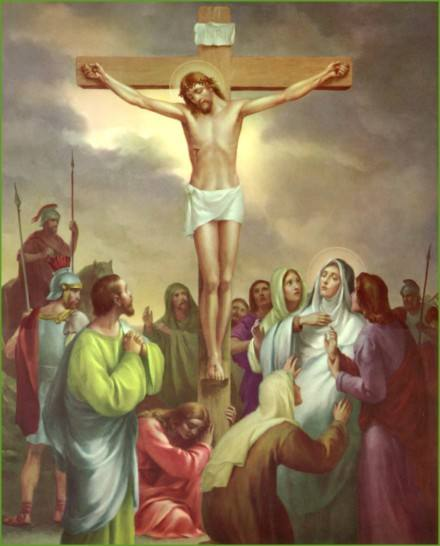
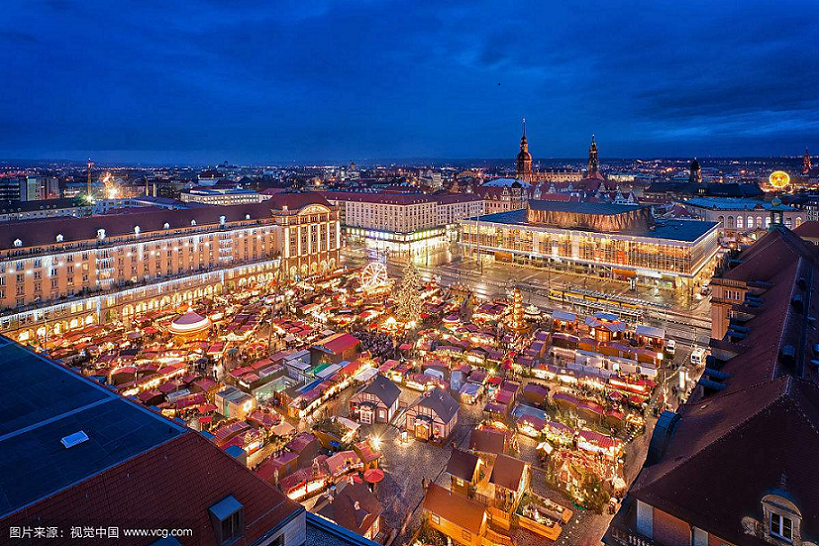
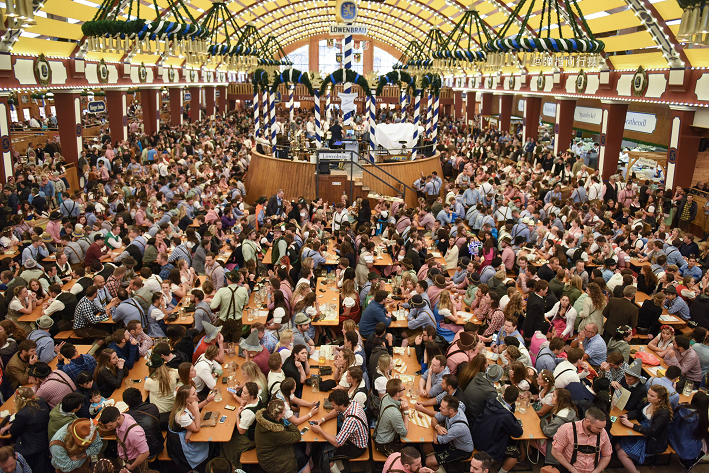

德国节日简介
作者：闫老师
时间：2018-11-21 14:36:14 | 来源：本站
刚刚过去的11月11日，这一天对中德两国来说都是一个特别的日子，很多中国人在光棍节这一天疯狂购物（购物，einkaufen），而万里之外的德国也在这一天拉开了狂欢节（Karneval）的序幕。众所周知，德国是一个以基督教和天主教为主要信仰的国家，很多节日都与基督教义有关，此外德国也是一个文化包容性很强的地方，来自世界各地的人们都汇聚于，除了很多来自东欧，土耳其甚至越南的已经加入德国国籍的“外乡人”，数据显示现在每13个生活在德国的人中就有一个是外国人；近一半的面孔都不再是日耳曼人，那么我们一起来看看这样的德国到底有哪些有趣的节日吧。
新年（Neuejahr）
时间：1月1日
所谓新年自然是阳历的1月1日了，德国的新年习俗与中国春节十分相似：12月31日午夜，绚烂的焰火照亮夜空，有如中国的大年除夕，就连放焰火传统的由来也与中国“年”的故事如出一辙。德国法律甚至已为此开了“绿灯”，一年之中只允许民众在12月31日至1月1日燃放焰火。德国人向来把跨年夜这一天当作一场大型的Party，这一天在德国的各大城市的地标广场，都会举办新年的庆典活动，如游行、新年敲钟和烟火表演。。

图1 德国北部城市汉诺威的新年烟花围绕着市政厅绽放
耶稣受难日（Karfreitag）
时间：复活节前的星期五
耶稣受难日是德国全国法定节日，它是纪念耶稣生命中最高潮的一周(即“圣周” ，又称受难周)中最重大的日子。这一周是从复活节前的一个星期日，耶稣进入耶路撒城，民众手持棕榈枝欢迎他开始，经复活节前的星期四，耶稣与门徒进“最后的晚餐”时设立圣餐礼以及星期五（受难日——纪念耶稣为世人的罪被钉十字架而死）到复活节（这一周的星期日）结束。
图2 耶稣为世人的罪被钉十字架而死
复活节（Ostersonntag/Ostermontag）
时间：每年立春第一个满月之后的星期日和星期一
复活节(Ostern)是除圣诞节之外德国另一个的重要节日。基督徒认为，复活节象征着重生与希望，他们为此来纪念耶稣基督被钉死在十字架之后，第三天复活的日子。节日期间，人们按照传统习俗把鸡蛋煮熟后涂上红色做各种游戏，因为鸡蛋是复活节的象征，因为它预示着新生命的降临，相信新的生命一定会从中冲脱出世。复活节假期因紧接着周五的耶稣受难日、周六、周日和复活节星期一，所以是固定的四天连放的小长假。
图3 孩子们做的各色复活节彩蛋
国庆节（Tag der Deutschen Einheit）
时间：10月3日
德国的国庆节即德国统一日，是全国法定假日，它是为纪念1990年10月3日原德意志联邦共和国(BRD，Bundesrepublik Deutschland)即“西德”，和原德意志民主共和国(DDR，Deutsche DemokratischeRepublik)即“东德”正式宣布统一的国家性节日。不同于其它一些国家的“国庆节”(National Holiday)，德国的国庆节并非为纪念民族独立或新国家的建立，而是为纪念被迫分裂的两个国家的重新统一。
图4 八十年代东西德尖锐矛盾的产物——柏林墙
圣诞节（Weihnachten）
时间：12月25日、12月26日
圣诞节是基督徒庆祝耶稣基督诞生的庆祝日，圣诞节如今已成为一个综合性节日。在德国它是除复活节之外，一年中最重大的传统节日。德国的圣诞气氛十分浓厚，每年圣诞节前的一个月全国的各大城市都会开始准备自己的圣诞市场，人们会到集市上去采购圣诞树、蜡烛、糖果等圣诞节需要准备的东西。
图5 慕尼黑灯火通明的圣诞市场
啤酒节（Oktoberfest）
时间：每年九月末到十月初
慕尼黑啤酒节又称“十月节”，起源于1810年10月12日，因在这个节日期间主要的饮料是啤酒，所以人们习惯性地称其为啤酒节，它并不是一个法定节假日而是一个传统的民间节日。啤酒节每年在德国的慕尼黑举行，持续两周，今年的慕尼黑啤酒节吸引了来自全球600多万名的游客消费了700万升啤酒，是慕尼黑一年中最盛大的活动。
图6 啤酒节这个古老而热闹的民间节日每年都会吸引大量游客
除了以上节日，德国还有许多有特色的节日：如刚刚开幕的狂欢节（Karneval），节日期间，到处都是奇装异服的人们，它的主角属于小丑和狂人；与戛纳国际电影节、威尼斯国际电影节并称世界三大电影节的柏林电影节（Berliner Filmfestspiele）……
汇聚了全球各个肤色人种和各种文化的德国，还有数不清的节日、庆典、展览，德国的文化底蕴和精神面貌在这些时候淋漓尽致地展现着，吸引着我们去感受这别样的西欧风情。